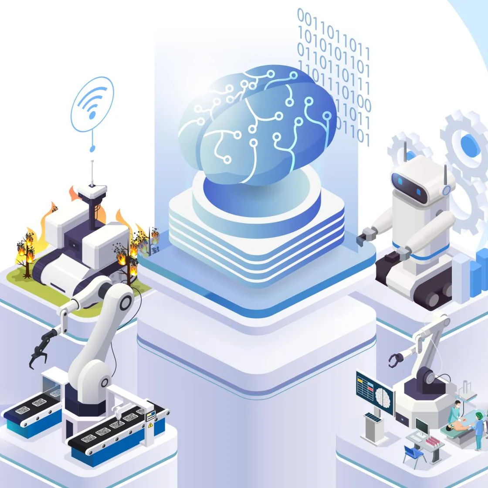

The Body becomes part of the AI
DGIST와 한국기계연구원이 창발지능 기반 Physical AI 로봇을 만들고, 산업과 의료 두 현장에서 함께 검증합니다.

About
형태가 기능을 정하던 로봇에서, 스스로 적응하는 로봇으로
창발지능 Physical AI 연구단은 DGIST가 주관하고 한국기계연구원이 함께하는 InnoCORE 연구단입니다. 과제명은 「창발지능 기반 Physical AI 로봇의 산업·의료 환경 적응 및 통합 실증 구현」입니다.
기존 로봇은 정해진 형태 위에 기능과 지능을 차례로 얹었습니다. 연구단은 구조·행동·지능이 물리적 상호작용 속에서 함께 진화하는 창발지능 로봇을 연구하고, 같은 기술을 산업과 의료 두 현장에서 함께 검증합니다.
Roadmap
이론 정립과 설계
창발지능 이론, 알고리즘 초기 설계, 프로토타입 설계, Fellow 합류
요소기술 시제품
요소기술 시제품과 개별 시스템 구축, 해외 파견 연수
통합 시스템 1차 구현
산업·의료 초기 실증, 중간평가
고도화 통합 실증
안전성·신뢰성 검증, 기술이전 후보 발굴
최종 Cross-domain 실증
TRL 5 달성, 최종평가와 성과 확산
Research
원천기술에서 실증까지 5개 세부과제가 이어지고, 같은 로봇 지능을 산업과 의료 두 현장에서 함께 검증합니다.
Achievements
Infrastructure
DGIST(대구)와 한국기계연구원(대전·대구) 두 거점의 연구 인프라를 함께 씁니다. 기관을 누르면 사진을 볼 수 있습니다.
Careers
InnoCORE Fellow(박사후연구원) 10명을 모집합니다. Fellow는 특정 연구실에 소속되지 않고 5개 세부과제를 순환하며 핵심기술부터 응용, 실증까지 전주기 연구에 참여합니다.
Global Network
연구진의 국제 공동연구 네트워크를 Fellow 멘토링과 공동연구에 활용합니다. 기관명은 협력기관의 동의를 받은 뒤 공개합니다.
North America
미국
Europe
프랑스 · 네덜란드 · 독일 · 스위스
Asia
중국 · 일본 · 싱가포르
Oceania
호주
Contact
산업·의료 실증 협력, 기술이전, Fellow 지원 문의를 받습니다.
DGIST (주관)
학과(로봇및기계전자공학과 · 전기전자컴퓨터공학과) · 연구부서(지능형로봇연구부 · 바이오메디컬연구부)
대구광역시 달성군 현풍읍 테크노중앙대로 333
한국기계연구원 (공동)
대전 본원 · 대구
대전광역시 유성구 가정북로 156 (대전 본원)